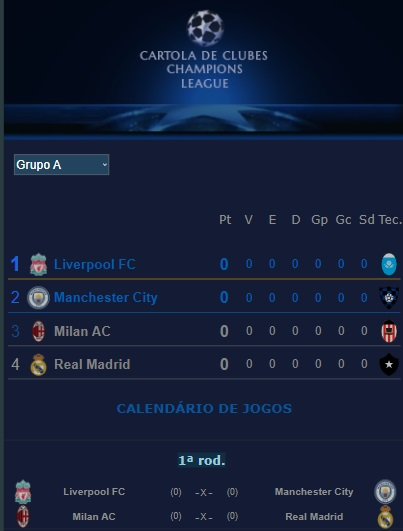

Campeonato de Cartola
A vitória no cartola é o sucesso do seu time!


Redação Cartola - 24/08/2024 - 11h30min 
Findo a temporada de 2023, a idéia era incorporar duas competições a mais, em substituição as extintas copinhas de mata-mata "Apertura", "Amizade", "Inverno" e "Clausura". As competições pensadas foram o "Campeoanto Latino" (principais clubes sulamericanos, excetuando os brasileiros) e a Champions League. A primeira era para ter sido jogada no primeiro turno, com o campeão e o vice garantindo participação na Libertadores, enquanto o 3º e 4º colocado iriam disputar a sulamericana. No entanto, o problema com as enchentes acabaram por prejudicar a organização deste torneio de primeiro turno, ficando sua estréia remarcada para a temporada de 2025.
Já a Champions League (apenas clubes de elite da Europa), programada para o segundo turno, conseguimos tirar do papel, com a estréia marcada para a rodada 24/24.
Trata-se de uma liga paga (este ano, o valor ficou em 30 reais), de participação livre e não vinculada ao espectro dos torneios interligas. Ou seja: pagando a taxa de inscrição, qualquer cartoleiro fica habilitado a participar, independente de estar ou não associado a uma das 4 ligas confederadas.
Projetada para a participação de até 16 treinadores, as vagas foram rapidamente preenchidas, não dando sequer oportunidade de ofertar esta competição nos nossos grupos de whatsapp.
A primeira fase começa com dezesseis clubes europeus divididos em quatro grupos, no sistema todos contra todos dentro dos grupos, rodadas de "ida-e-volta". Campeão e vice avançam para a segunda fase de mata-mata. Em caso de empate nos critérios, passa o clube de melhor campanha na fase de grupos.
Campeão leva 330 reais e 70pts no ranking geral de treinadores, e o vice, 100 reais. Além disso, campeão e vice classificam-se gratuitamente para a disputa do Mundial de Clubes de Cartola, com o vice iniciando desde a primeira fase, enquanto o campeão, a exemplo do vencedor da Libertadrores, ingressa diretamente nas semifinais da competição.
O torneio pode ser acessado via menu "campeonatos estrangeiros". Depois, é só clicar sobre a imagem da competição. Ou então clicando neste atalho.